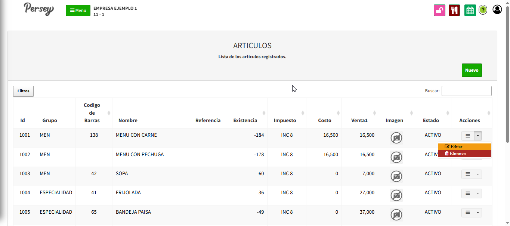
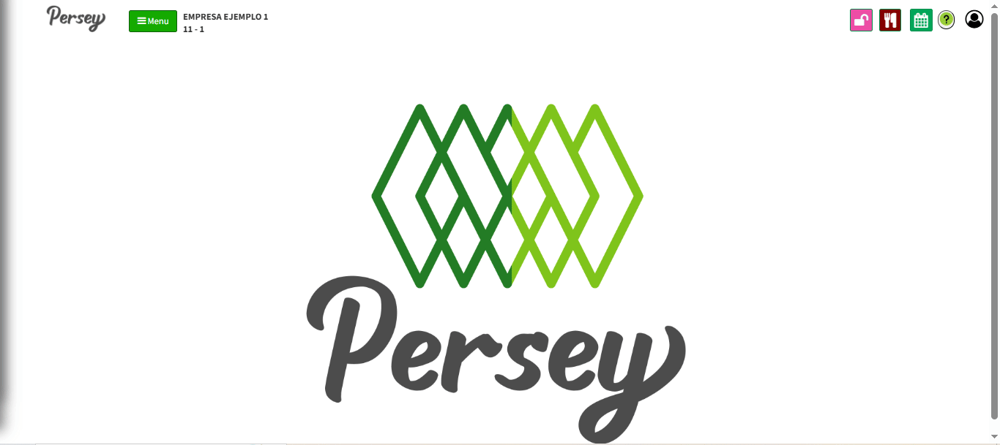
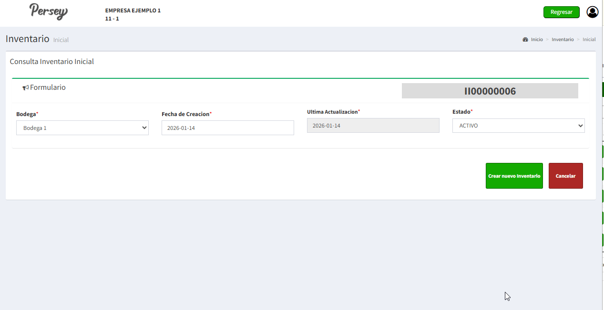
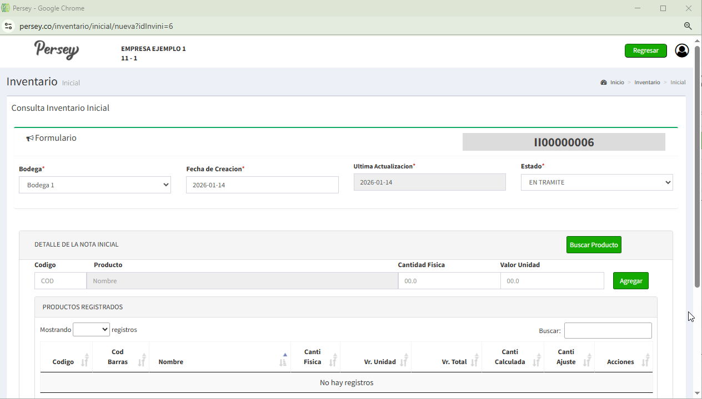
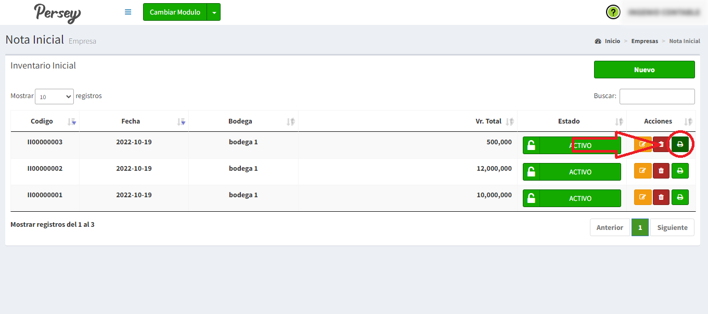
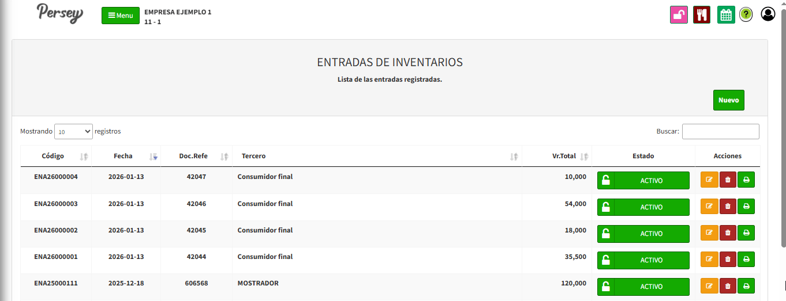
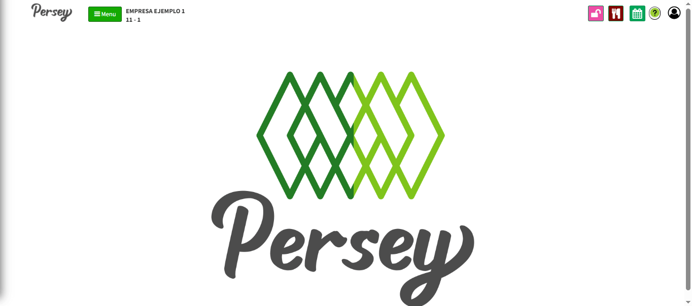
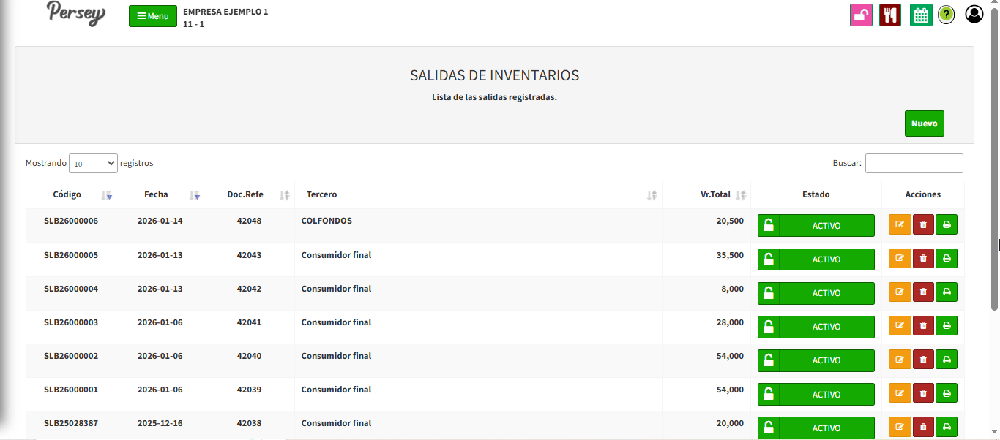
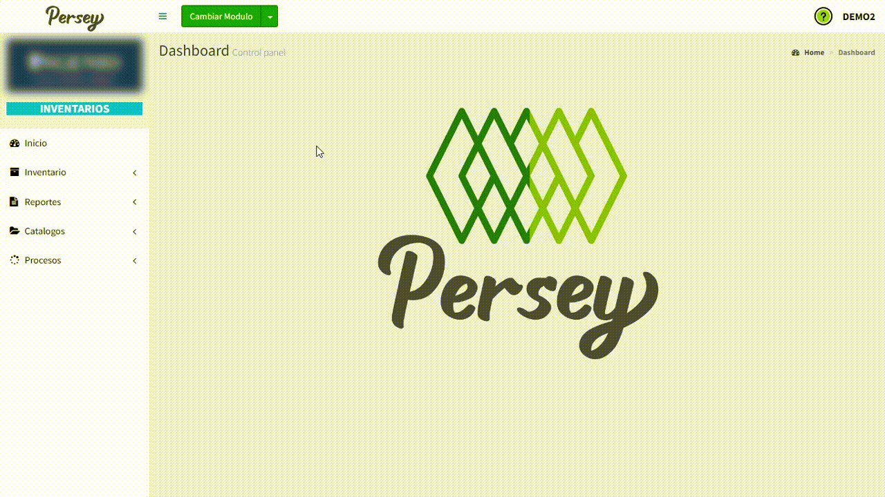
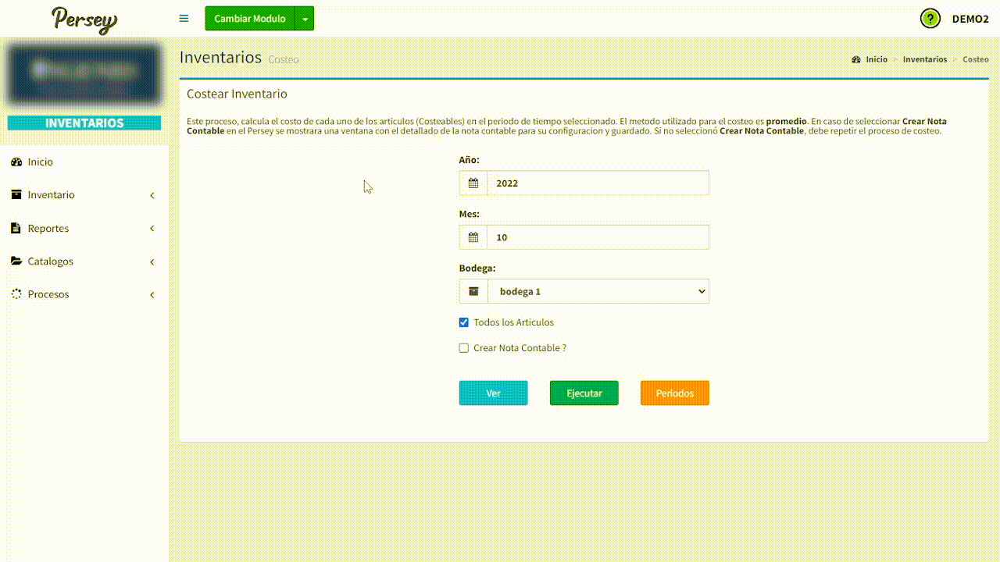

Primeros pasos#
En el menú lateral izquierdo va a encontrar todas las opciones que usted va a poder realizar en el aplicativo de Persey.
Guia visual :


En el menú lateral izquierdo va a encontrar todas las opciones que usted va a poder realizar en el aplicativo de Persey.
Aqui podras guiarte paso a paso como realizar un inventario inicial, registrar una entrada, una salida, crear articulos o productos y mas
Para poder realizar cualquier proceso de inventario primero debe tener Articulos creados de click en CREAR ARTICULOS para dirigirse a esa sección
Despues de tener Articulos creado ahora podras generar un inventario inicial de tu negocio agregando todos los productos con los que empiezas en tu bodega

Dirijase en el menú a la opcion de inventario luego la opcion Inicial
Ahora dirijase en la parte derecha y de click en un boton verde que dice NUEVO
Se abrirá una ventana emergente con un formulario que debe diligenciar escogiendo la bodega donde quiere hacer el inventario, la fecha y el estado Actual del inventario, en este caso sería activo
Lo siguiente es agregar los productos al inventario
En esta opción usted deberá dar click en el boton de buscar producto y seleccionar el producto con el boton amarillo. Automaticamente le saldra el codigo del producto el nombre la cantidad y el valor, debe modificar los campos de la cantidad y el valor de la unidad que quiera agregar

En esta opción usted puede diligenciar el formato que se le hará entrega cuando adquiere el sistema Persey y los desarrolladores subiran sus productos directamente a la base de datos
Si desea imprimir o descargar un documento tipo factura de su inventario inicial debe darle click en el boton verde que aparece a la derecha del inventario que agregó
Si necesita hacer una entrada usted debe dirigirse en el menú lateral a la opcion que dice inventario luego Entradas

Ahora usted deberá darle click en el boton verde que dice NUEVO
Se abrirá una ventana emergente con un formulario que debe diligenciar escogiendo el tipo movimiento, puede poner un tercero de donde viene el movimiento. El campo doc.Ref debe ser el mismo numero de la factura, puede poner una descripción si desea, la fecha, el estado y la bodega

Ahora deberá agregar los productos a la entrada que va a generar, debe darle click en el boton que dice buscar producto, selecciona el producto con el boton amarillo, debe poner la cantidad y el valor unitario luego darle en el boton agregar

En esta sección podra registrar todos los movimientos de salida que haga su empresa. Si necesita registrar una salida usted debe dirigirse en el menú lateral a la opcion que dice inventario luego Salidas
Ahora usted deberá darle click en el boton verde que dice NUEVO
Se abrirá una ventana emergente con un formulario que debe diligenciar escogiendo el tipo de ajuste de salida, puede poner un tercero a donde va el movimiento. El campo doc.Ref debe ser el mismo numero de la factura, puede poner una descripción si desea, la fecha, el estado y la bodega

Ahora deberá agregar los productos a la salida que va a generar, debe darle click en el boton que dice buscar producto, selecciona el producto con el boton amarillo, debe poner la cantidad y el valor unitario, darle en el boton agregar y por ultimo en guardar

Con el fin de que la creación de traslados sea correcta, se debe tener en cuenta que los parametros de configuración en el modulo de administración deben estar dados de la siguiente forma:

En esta sección podra registrar todos los traslados de una bodega a otra
Dirijase a la sección de "Inventario" -> "Salidas" y oprima el botón "Nuevo"
Seleccione el tipo de movimiento "Salida Traslado Bodegas", rellene los campos con la información necesaria
Oprima el botón "Trasladar", seleccione la bodega de origen y la bodega destino para el correspondiente traslado y por ultimo dele en "Guardar"

En esta sección podra registrar todos los articulos que maneje su empresa.
Para crear un nuevo articulo usted deberá darle click en el boton verde que dice NUEVO

Debe llenar el formulario definiendo el codigo de barras,tipo de articulo, codigo de referencia, un nombre corto, un nombre largo, el valor del iva que le va a asignar y el estado. Ya diligenciado el formulario le da click en guardar

En esta sección podrá revisar los reportes de inventario y los kardex de los articulos
Este reporte detalla las cantidades por tipo, las cantidades iniciales, entradas, salidas, y el saldo de los articulos filtrados por grupos.

le aparecerá un pequeño formulario donde debe indicar la bodega, el grupo, la cantidad, la fecha desde-hasta. Luego debe darle click en el boton que dice ver

Si desea optener un reporte en documento PDF solo debe darle click en el boton que dice "PDF"

En esta seccion puede visualizar el movimiento desde el inventario inicial con las entradas y salidas del producto, este Kardex lo puede previsualizar por dada uno de las bodegas donde estan los productos.

le aparecerá un pequeño formulario donde debe indicar la bodega, el articulo, el tipo, la fecha desde-hasta. Luego debe darle click en el boton que dice ver

En esta seccion podra configurar o definir diferentes aspectos de su negocio tales como, un grupo para sus articulos, añadir bodegas para almacenar sus articulos, crear unidades de medida, y añadir terceros
Para agregar un nuevo grupo de articulos debe darle en el boton que dice "NUEVO". Debe diligenciar el nombre del grupo, el estado Y darle click en el boton que dice "GUARDAR"

Para agregar una nueva Bodega debe darle en el boton que dice "NUEVO". Debe diligenciar el nombre de la bodega, el estado Y darle click en el boton que dice "GUARDAR"

Para agregar una nueva unidad de medida debe darle en el boton que dice "NUEVO". Debe diligenciar el nombre de la unidad Y darle click en el boton que dice "GUARDAR"

Para agregar un tercero a su empresa debe darle en el boton que dice "NUEVO". Debe diligenciar el formulario con los campos correspondientes de izquierda a derecha, los campos que tienen un asterisco rojo son obligatorios. Cuando complete el formualario debe darle click en el boton que dice "GUARDAR"

En esta seccion encontramos dos apartados, Costeo y salidas de inventario aquí podremos hacer una actualización de los inventarios finales si se hicieron modificaciones
Este proceso, calcula el costo de cada uno de los articulos (Costeables) en el periodo de tiempo seleccionado. El metodo utilizado para el costeo es promedio. En caso de seleccionar Crear Nota Contable en el Persey se mostrara una ventana con el detallado de la nota contable para su configuracion y guardado. Si no seleccionó Crear Nota Contable, debe repetir el proceso de costeo.
Para realizar el proceso de costeo debe seleccionar el año el mes y la bodega luego darle en el boton ejecutar. Persey hará un analisis y realizará el el proceso. Le mostrará una ventana emergente con los datos del costeo actual
Este proceso permite crear salidas de inventario a partir de las facturas ya guardadas.
Debe seleccionar el talonario y el rango de fechas , luego seleccione las facturas de las cuales se deben hacer las salidas y dar click en el boton buscar. Le aparecerán todas las facturas que usted tenga en el rango de fecha

si la factura le sale en rojo es porque no tiene un documento generado, usted debe verificar que la factura este seleccionada luego darle click en el boton ejecutar y automaticamente le va a generar el documento a su factura